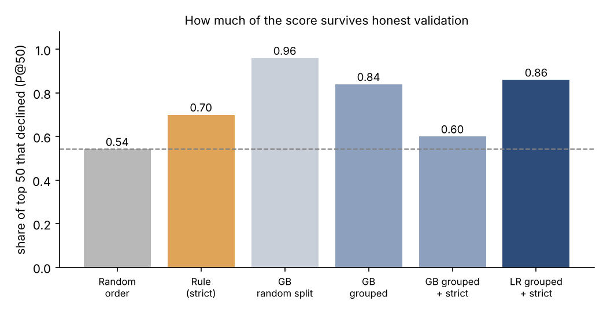
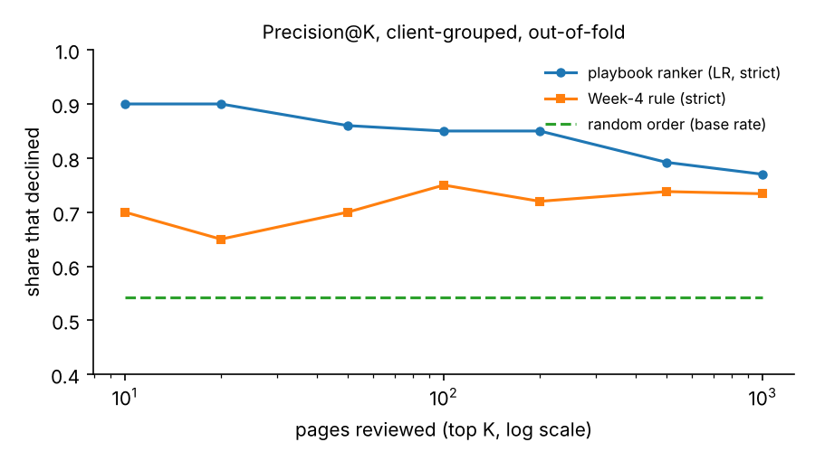
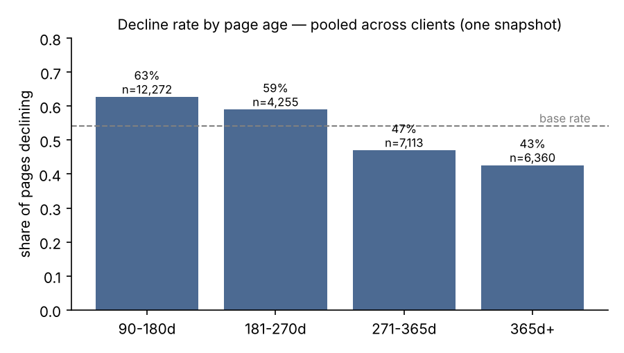

Which pages should a content reviewer check first?
Abstract
FlyRank publishes and maintains search content for many brands. Its product already flags pages for refresh or click-through fixes using hand-written rules, but a review team can only open a few dozen pages a week. This study asks which pages that team should open first.
On 30,000 pseudonymised pages from 32 client sites, I tested the signals behind two of those flags, encoded one as a transparent rule, and compared it with learned rankers. Every page was scored by a model that had never seen its client, using only data from before the window in which decline is measured.
The final ranker placed 86% declining pages in its top 50, against 70% for the rule and 54% at random. A stronger-looking model's lead (96% on a random split) did not survive the same checks. The output is a capped, human-reviewed queue for review order — not a forecast, and not evidence that any action prevents decline.
1The content problem this comes from
A typical week: a reviewer looks after hundreds of published articles across several client sites. Some are slipping in search — fewer people see them each week — but most teams notice only after the traffic is gone. There is time to open perhaps fifty pages. Which fifty?
FlyRank already answers this with rules. Its product flags pages that look stale, pages whose click-through is weak for their position, and "quick wins". FlyRank's own March 2026 research report recommends the same priorities in prose: refresh mature pages before they decay, and improve click capture on pages that already rank. Rules like these are readable and they run in production — but their thresholds are chosen by hand, and nobody had checked how well they order a review list on held-out clients.
This paper is that check, done as a case study on FlyRank's own data. It asks three things:
- Do the signals behind the flags hold up? Staleness (behind the refresh flags) and CTR-versus-position (behind the CTR-fix flag).
- Can a simple learned ranker order the review list better than a rule built from those signals?
- How much of any gain survives honest validation — new clients, and no peeking at the period the outcome is measured in?
The short answers: one signal held and one did not; yes, a plain logistic regression beats the rule; and less survives than a standard workflow would report, which changed which model I would recommend.
2Data
- Source: the FlyRank ML Internship starter release — Google Search Console and Google Analytics 4 metrics, pseudonymised before release. There are no client names, domains, URLs, page titles or search queries.
- Size: 30,000 pages from 32 client sites. Each page has one 90-day performance window plus two 30-day comparison windows.
- Population: every page is at least 90 days old and had at least one impression in the window.
- Outcome (used only to grade rankings): a page counts as declining when its impressions fell more than 20% between the last 30 days and the 30 days before. That covers 16,262 pages (54.2%), so random ordering scores 0.54 at any list length.
- Never used as inputs: the outcome fields themselves and the two 30-day windows that build them. Site IDs were used only to group the validation, never as features. The release contains no product flags or health scores.
- Not used: the full 79-million-row warehouse release, which was not reachable from the environment this work ran in.
3Methodology
Step 1 — Check the signals before trusting them
- Staleness: mixed. Pooled across all pages, pages last updated 91–120 days ago declined more (61% vs 51%). But updates arrive in client-wide batches — two clients hold two-thirds of that bucket — and inside individual clients the gap was about zero. The common "180 days stale" threshold fired on only 17 pages with real traffic.
- CTR versus position: confirmed, for positions 1–20. The further a page's click-through falls below the median for its position band, the more often it declined. This held inside 15 of the 16 clients large enough to check.
Step 2 — A transparent baseline
A page is flagged if it ranks in positions 1–20, has at least 500 impressions, and its CTR is less than half the median for its position band. Flagged pages are ranked by how far CTR falls short, scaled by the log of impressions. The rule has one reason code, one action ("rewrite title/meta") and no fitted weights.
Step 3 — Learned rankers
I compared logistic regression, a depth-3 decision tree, random forest and gradient boosting. Each model's predicted probability is used as a ranking and graded with precision@K: of the top K pages, the share that actually declined.
Step 4 — Validation designed to be hard to fool
- Grouped by client. Five folds, so every page is scored by a model that never saw any page from its site. This mirrors adding a new client.
- Time-aware inputs. The outcome compares days 1–30 with days 31–60 before export, but the standard 90-day totals include those days. I rebuilt traffic for days 61–90 exactly (90-day total minus the two 30-day windows; never negative). The final model uses only that earlier window plus page metadata.
- Leakage checks. I planted the outcome field as a feature: accuracy jumped to near-perfect (AUC 1.00), which shows the test harness catches leaks. I also ran drop-one tests, a feature timeline, and a scan for product flags.
4Results

| Ranker | Validation | P@50 | AUC |
|---|---|---|---|
| Random order | — | 0.54 | — |
| Rule (CTR below position norm) | client-grouped, earlier window | 0.70 | — |
| Gradient boosting, all 90-day features | random split | 0.96 | 0.78 |
| Gradient boosting, all 90-day features | client-grouped | 0.84 | 0.69 |
| Gradient boosting, earlier window only | client-grouped | 0.60 | 0.61 |
| Logistic regression, earlier window only | client-grouped | 0.86 | 0.66 |
What the final model leans on is unsurprising. Its three largest weights are:
- Earlier impressions — push toward decline.
- Earlier clicks — push away from decline.
- Page age — younger pages lean toward decline.
Together, the first two are a smoother version of the CTR signal behind FlyRank's CTR-fix flag: pages that many people saw but few clicked. No single input is suspiciously strong; the best single feature alone reaches an AUC of only about 0.59.


5Limitations and honest framing
- One snapshot, same-period outcome. The outcome compares two recent 30-day windows. This ranks pages for review; it does not forecast next month.
- No causal claim. No page here was randomly refreshed or rewritten, so nothing shows that an action prevents decline. The same applies to "refreshed vs not" comparisons: in this slice they are mostly comparisons between client sites.
- Client effects are large. 7 of 32 sites had a decline rate below 20% or above 80%, where page-level ranking adds little. In raw model order, one site filled 84% of the top 200.
- Outcome noise. 15% of "declines" rest on fewer than 20 earlier impressions, for example a single impression falling to zero.
- One pattern dominates the top. 82% of the top 50 had zero earlier clicks despite hundreds of impressions. Some of these may be tracking gaps rather than real pages in trouble.
- Scope. Starter slice only, and only pages at least 90 days old that were still visible. Not yet tested on the full warehouse, on new pages, or on a forward time window.
6Ranked recommendations
- Run two short lists, not one. A risk queue of the top 50 by score, capped at 10 pages per site (the cap costs no precision: 0.86 vs 0.84 uncapped). Plus a value lane of the top 20 by score × earlier clicks.
- Check tracking before editing any page with zero clicks on 300+ impressions.
- Skip pages updated in the last 60 days (69% of the top 200). Wait for the last change to show up before acting again.
- Treat many queue pages from one site as one case. Look for a site-level cause first: a migration, a tracking change, or an algorithm update.
- Keep humans on every edit. Do not automate rewrites, merges, redirects, deletions, or messages to clients that their content "is declining".
- Next step: a click-weighted outcome, so risk and value point at the same pages, validated on a forward window in the warehouse release.
Each page in the exported queue carries an action, a reason code (for example low_ctr_page_1_2 | earlier_ctr_low) and three review flags. The capped top 50 found 43 declining pages in about 12.5 review hours, versus 30 for a random 50.
7Reproducibility
- Repository: github.com/susheel123-sketch/Flyrank-Internship-ml
- Notebooks (
work/notebooks/):w04_baseline_score— signals and rulew05_model— modelsw06_validation_audit— honest splits and leakagew07_action_playbook— queue and gatescapstone— re-runs every headline number on this page and asserts it matches the committed receipts
- Receipts:
work/outputs/w04…w07_*_metrics.json. The queue CSV is regenerated by the Week-7 notebook rather than committed. - Settings: seed 42, scikit-learn 1.9.1, 5-fold GroupKFold by client. Each notebook runs top to bottom in Colab from a fresh clone.
8Acknowledgments and data credit
Built on the FlyRank ML Internship dataset — flyrank.ai. The data is a pseudonymised release of real Google Search Console and Google Analytics 4 performance data, shared for the internship under public-safety rules: no client names, URLs or search queries. Methodology guidance came from the internship's weekly sessions and from FlyRank's report The State of AI-Driven SEO, March 2026, whose disclosed evidence standard this work tried to follow.